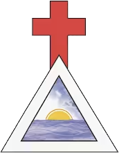
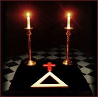

Золотая
Заря в Украине
 
2023-12-06: Данный сайт был создан мной в 2005 году, после того как я сам успешно прошел самоинициацию по системе Золотой Зари. Попытки организовать движение Золотой Зари в Украине в тот час не увенчались успехом, хостинг сайта закончился, а я сам перестал активно заниматься по этой системе. В жизни с того времени произошло очень много всего. Будет правильным сказать, что с того момента моя жизнь и я сам изменились настолько, что стали сегодня совершенно иными. Сегодня можно с уверенностью сказать, что это последствия проведенного мной ритуала самоинициации. Осознав это, я решил выложить заново данный сайт. Тут представлены все мои переводы того времени основных материалов первых двух ступеней по системе самоинициации Золотой Зари, в том формате, как они были разработаны Чаком и Сандрой Чичеро. Возможно кому то они покажутся интересными или помогут на непростом пути саморазвития.
Frater C.P.
На данном сайте представлены переводы рабочих программ, ритуалов и практик Великого Делания в системе Магического течения Золотой Зари. Источник материалов - Храм МААТ Золотой Зари (Ordo Stella Matutina: Hermetic Sanctuary of Ma’at). Программа занятий подразумевает возможность самоинициации, что немаловажно для нашей страны, где возможность получить Инициацию в действующем храме пока отсутствует.
Представленных здесь материалов достаточно, чтобы начать самостоятельное обучение. При этом вам понадобится информация, потому что нужно понимать, что и почему вы делаете. Информации по данной теме достаточно в Интернете, кроме того на русский язык переведено уже немало книг.
Любые исправления, пожелания и общение приветствуется.
Перебывайте в Свете!
Кандидат
Степень Кандидата является подготовительной для самоинициации, представляя основные концепции и практическую работу в объеме, необходимом для проведения Ритуала самоинициации. Вводная работа состоит из выполнения техник визуализации и осознания, введение в работу с Высшим течением, используя разные практики, в том числе Обряд Серединного Столпа, Опускание Света с Небес, базовую формулу вибрации; а также знакомство с тремя разными формами Божества (Маат, Темис, Тме), служащего посредником для самоинициации между кандидатом и Богоформами в Зале Неофитов.
1. Подготовительная Медитативная Работа
3. Знакомство с божественной формой ТМЕ
Каббалистическое Святое Омовение
Простой Ритуал Психической Защиты
Неофит 0=0
Степень Неофита знакомит претендента с символизмом и языком Герметизма. Первая Ступень Внешнего Ордена Золотой Зари, называемая ступенью 0=0 (ибо она не связана ни с одной Сефирой на Древе Жизни) начинается после получения первой инициации, полученной в действующем храме или благодаря процессу самоинициации.
Учащийся должен совершать предписанную работу с абсолютной верностью, настойчивостью, стойкостью (и радостью). Необходимо избегать любого пропуска исполнения предписанных ежедневных ритуалов, чтобы преуспеть в данной степени. Для преодоления сопротивления, которое неизбежно встанет на пути учащегося, у него должно быть сильное и постоянное намерение. Сопротивление имеет много безобразных форм, начиная с лени, нестабильного распорядка дня, личной жизни, домашних проблем или других неудачных событий, которые имею тенденцию случаться чаще с людьми, вставшими на путь духовного развития. Это соревнование либо ломает волю учащегося, либо учит его ценить настойчивость и стойкость. Капитуляция и сдача перед препятствиями только утверждает поддельный авторитет эго, побеждая таким образом особую цель самосовершенства.
На эту степень вместе с степенью Кандидата, учащийся должен потратить минимум 6 месяцев. Если вы получаете инициацию самостоятельно, то после 4х подготовительных месяцев Кандидата, вам останется как минимум 2 месяца, благодаря уже установленному в предыдущей степени рабочему режиму. Если же вы сразу получили инициацию Неофита в храме, то начинаете с программы Кандидата (4 месяца), а затем продолжаете по программе Неофита (2 месяца). Однако это не значит, что вы должны потратить на эту степень как можно меньше времени. Наоборот, опыт показывает, что те учащиеся, которые потратили на эту степень больше времени, имеют больше шансов преуспеть в следующих степенях. Духовный рост никогда не стоит рассматривать как гонку или соревнование на приход к финишу, ибо такое отношение может идти только от эго, ищущего разных способов своего утверждения.
Ритуал самоинициации в степень Неофита
L.V.X.
Fraternally, Frater C.P.